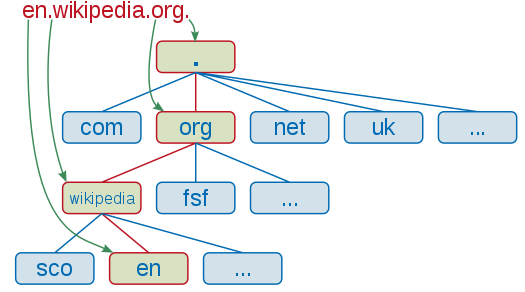

A tartománynév
A tartománynév (angolosan domainnév, illetve doménnév) az Internet egy meghatározott részét, tartományát egyedileg leíró megnevezés. A tartománynevek kiosztása és értelmezése a Domain Name System (DNS) szabályai szerint, hierarchikusan történik. A tartományneveket gyakran összekeverik a weblapokkal, webhelyekkel, a webcímekkel (URL) vagy az internetes szolgáltatásokkal, melyek az adott néven (pontosabban az adott névhez tartozó számítógépen) érhetőek el.
A tartománynév (domainnév) leírása
A domén a számítógépek (kiszolgálók) azonosítására szolgáló
Legfelső szintű domainnevek
névtartomány. Az internetre csatlakozó összes számítógépnek egyedi azonosítója, ún. IP-címe van, ami hasonló a személyi igazolvány számunkhoz. A számítógépek közötti kommunikáció (adatátvitel) ezen címek között zajlik. A doménnevek valójában ezen nehezen megjegyezhető IP-címeket teszik könnyen megjegyezhetővé, egyben egyedivé. A legfelsőbb szintű doménnevek – végződésük alapján – alapvetően két nagy csoportba oszthatók: nemzetközi fődomének és nemzeti domének. A nemzetközi fődomének (Top Level Domain – legfelső szintű tartomány) közé tartozik például a .com (kereskedelmi tevékenységet jelöl), a .net (hálózatot – network-öt jelöl) vagy épp a .org (szervezet) kiterjesztésű doménvégződések. A nemzeti domének végződései egy-egy ország nevéből képzett rövidítések (az ISO 3166-1 szabvány szerint), például: .hu – Magyarország, .at – Ausztria, .de – Németország, .fr – Franciaország, .jp – Japán. A doméneket speciális alkalmazások (DNS – névszerverek) tartják számon és böngészés alkalmával azonosítják, párosítják a hozzá tartozó IP-címmel. Amennyiben a domén mögött világhálós tartalom (honlap) van, a doménhez tartozó, tárhelyen lévő kezdőlapot (index.html vagy index.php stb.) a szerver kiszolgálója elküldi a világháló segítségével a böngésző számítógépére és a honlap megjelenik a monitoron.
A tartománynevek felépítése
A tartománynevek rendszerének felépítése hierarchikus,

Tartománynevek felépítése
vagyis a nevek részei közül egyesek alá vannak rendelve a név más részeinek. Az elemeket ponttal választjuk el. A nevek a legalacsonyabb szintű elemmel kezdődnek, ami alá van rendelve az azt követő elemnek, ami az őt követőnek, és így tovább. A tartománynév tulajdonosa a hierarchiában alá tartozó neveket saját hatáskörében oszthatja ki.
Példa
Jelen esetben legyen a példa a en.wikipedia.org cím:
- Az org a legfelső szintű tartomány (TLD), mely alá általában szervezetek (angolul organization) regisztrálják neveiket.
- Ezalatt a wikipedia második szintű tartomány (SLD) helyezkedik el, mely általában a tartománynév tulajdonosára jellemző (cégnév, személynév, terméknév, védjegy stb.). Ez jelen esetben a Wikipédia.
- Az en az előbb említett wikipedia.org alá tartozó számítógépet jelöli, vagyis a „Wikipédia szervezet” egy „en” nevű gépét. Ennek a résznek (tehát az SLD alá rendelt tagnak) a neve állomásnév (hostname, hostnév)
Mindezen tagok együtt (en.wikipedia.org formában) kijelölnek egy számítógépet, melynek címe ebből a névből meghatározható, és így a gépen levő szolgáltatásokat igénybe lehet venni (például a rajta elérhető webszervert, ami a Wikipédia weblapok tartalmát szolgáltatja).